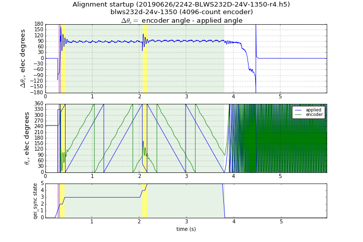
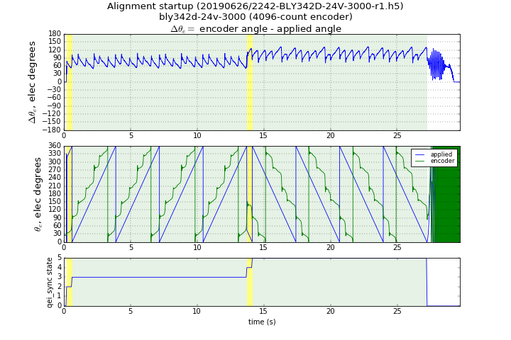
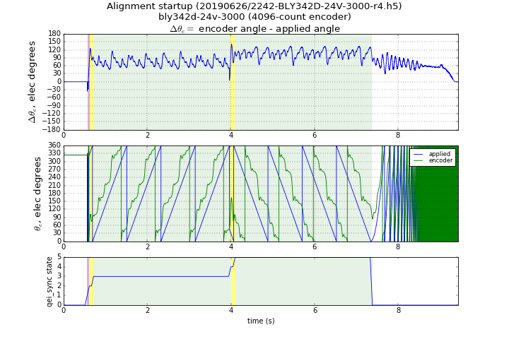

5.4.3.3.3. 对齐并扫描方法¶
5.4.3.3.3.1. 概述¶
对齐并扫描方法是对 对齐方法的一个小改动。不是在对齐状态下使用固定角度，而是将施加的电气角度在两个方向上缓慢旋转一个完整的机械周期，通过在这两个周期内取施加角度与测量角度之差的平均值来估计换相偏移。（使用与对齐方法相同的计算，但使用多次测量的平均值代替单次测量。）其目的是通过覆盖完整的机械周期，将齿槽转矩导致的角度变化平均掉。在正向和反向旋转上取平均可以消除大部分摩擦转矩的影响。
得到的换相偏移具有极好的 精度和可重复性表现。然而，它比简单的对齐方法需要更多时间，且略微复杂一些。
5.4.3.3.3.2. 局限性¶
对齐方法的 局限性，即转矩扰动和半稳定平衡，在对齐并扫描方法中的影响较小。然而，扰动转矩仍可能导致测量误差，应尽量避免。
5.4.3.3.3.3. 实际实现问题¶
斜坡上升和对齐角度对此算法不是特别重要。
在此方法中，需要在测量前使初始对齐瞬变稳定下来。任何加速都会产生对齐瞬变，因此反转旋转方向会产生瞬变，从静止到缓慢电气旋转的变化也会产生瞬变。
为了管理这些瞬变，对齐并扫描方法包含“设置”区间。在设置区间内，角频率保持恒定，允许对齐瞬变在测量区间开始前稳定下来。
5.4.3.3.3.3.1. 旋转速率的选择¶
MCAF R4 允许在对齐并扫描方法期间选择三种旋转速率：每控制 ISR 1、2 和 4 个脉冲，其中每个脉冲为电气周期的 1/65536 ≈ 0.0055°。4 脉冲选项最快，1 脉冲选项最慢。
旋转速度和精度之间存在权衡。以更高的旋转速度运行对齐并扫描方法将更快完成测量，但会经历更大的角度波动，结果角度偏移可能有更多的随机误差。更低的旋转速度将提高精度，但会增加测量时间。
5.4.3.3.3.3.2. 涉及角度的计算¶
对涉及回绕语义的角度测量值取平均可能很棘手，因为计算中涉及必须区分的“好”和“坏”溢出，且避免溢出并不一定保证结果正确。作为示例，假设我们希望找到以下角度序列的平均值：+176°、-170°、-174°、-167°、+177°。简单的均值计算将得到 -31.6°，这是不正确的。有至少两种方法可以处理此问题：
在取平均之前展开角度。 “展开”在这里意味着将小角度变化转换为保持角度值等价但调整整数转数，以便永远不会跳过 ±180° 的分支点。在上面的示例序列中，展开角度将产生序列 +176°、+190°、+186°、+193°、+177°，得到正确的平均值 +184.4° = -175.6°。
在取平均之前偏移角度。 避免跳过分支点的一种简单方法是通过固定偏移移动分支点。我们可以使用减去第一次测量值的偏移，只要从第一次测量的角度净变化保持在 180° 以下，就不会跨过分支点。在上面的示例序列中，使用 -176° 的偏移（第一次测量值的负值），结果序列变为 0、+14°、+10°、+17°、+1°，平均值为 +8.4°；加回第一次测量值 +176° 得到 +176° + 8.4° = -175.6°。
在对齐并扫描方法中，使用偏移方法而非展开方法；偏移方法复杂性较低，且需要更少的内存来避免溢出。
5.4.3.3.3.3.3. 状态机¶
为了管理设置和测量区间，对齐并扫描方法包含一个简单的状态机，按固定序列运行：
START— 记录初始角度测量值，作为避免回绕问题的参考点。FORWARD_SETUP— 开始在正方向上缓慢旋转施加的电气角度，越过指定的角度区间。FORWARD_MEASURE— 计算并累加施加角度与测量的编码器角度之间的角度差。继续正方向缓慢旋转一个完整的机械周期。REVERSE_SETUP— 开始在反方向上缓慢旋转施加的电气角度，越过指定的角度区间。REVERSE_MEASURE— 计算并累加施加角度与测量的编码器角度之间的角度差。继续反方向缓慢旋转一个完整的机械周期。INACTIVE— 保留电气角度不变，允许 启动序列 继续通过对齐状态。
除了在 INACTIVE 状态之外的所有状态中， 启动序列 被保持在对齐状态中，以完成同步步骤。
5.4.3.3.3.4. 示例数据¶
图 5.64 展示了对齐并扫描方法在 Anaheim Automation BLWS232D-24V-1350-1024SI5 上的使用，该电机具有 1024 线编码器和较低的齿槽转矩。对于此电机，对齐并扫描方法效果很好，误差低。黄色高亮部分显示两个设置状态（FORWARD_SETUP 和 REVERSE_SETUP），绿色高亮部分显示两个测量状态（FORWARD_MEASURE 和 REVERSE_MEASURE）。设置状态允许瞬变在测量前充分稳定下来。此电机由于齿槽转矩仅显示约 ±10° 的波动，波动被平均掉。

图 5.64 对齐并扫描方法（BLWS232D-24V-1350-1024SI5，扫描速率 = 4 脉冲/控制 ISR）¶
BLY342D-24V-3000-1024SI5 具有高齿槽转矩，对反电动势同步提出了更大的挑战。 图 5.65 和 5.66 展示了对齐并扫描方法在此电机上的实际运行；两个图显示了不同的扫描速率。角度波动可超过 60° 峰峰值，库仑摩擦的影响作为方向相关的偏移很容易看出。较低的扫描速率有助于减小角度波动，并产生更准确的结果，代价是测量时间更长。

图 5.65 对齐并扫描方法（BLY342D-24V-3000-1024SI5，扫描速率 = 1 脉冲/控制 ISR）¶

图 5.66 对齐并扫描方法（BLY342D-24V-3000-1024SI5，扫描速率 = 4 脉冲/控制 ISR）¶
5.4.3.3.3.5. 精度和可重复性测试¶
对齐并扫描方法在 MCAF R4 中进行了测试，并将从索引获得的换相偏移（motor.estimator.qei.position.commutationOffsetFromIndex）与参考方法进行了比较，参考方法是在电机以恒定速度机械转动时测量电机端子的开路电压。
表 5.3 描述了结果。在每种情况下，对齐并扫描方法进行了 16 次迭代。（初始条件相同，但对估计偏移的影响不显著，因为此方法旋转电机覆盖整个机械转动。）每个电机使用 dsPICDEM® MCLV-2 开发板，默认电流限制为 2.29A，默认启动电流为电流限制的 91% = 2.08A。
均值 \(\tilde\theta_{\mathrm{ofs}}\) |
最大值 \(\tilde\theta_{\mathrm{ofs}}\) |
标准差 \(\hat\theta_{\mathrm{ofs}}\) |
极差 \(\hat\theta_{\mathrm{ofs}}\) |
r |
测试用例 |
|---|---|---|---|---|---|
0.02° |
0.03° |
0.007° |
0.02° |
2 |
BLWS232D-24V-1350-1024SI5 |
0.03° |
0.06° |
0.013° |
0.06° |
4 |
BLWS232D-24V-1350-1024SI5 |
0.06° |
0.08° |
0.010° |
0.03° |
2 |
BLY171D-24V-4000 带 4096 线编码器 |
0.05° |
0.07° |
0.009° |
0.03° |
4 |
BLY171D-24V-4000 带 4096 线编码器 |
0.08° |
0.10° |
0.016° |
0.07° |
1 |
BLY342D-24V-3000-1024SI5 |
0.18° |
0.22° |
0.016° |
0.07° |
2 |
BLY342D-24V-3000-1024SI5 |
0.15° |
0.47° |
0.195° |
0.58° |
4 |
BLY342D-24V-3000-1024SI5 |
0.08° |
0.10° |
0.008° |
0.03° |
2 |
BLY342D-48V-3200-1024SI5 |
0.18° |
0.22° |
0.029° |
0.12° |
4 |
BLY342D-48V-3200-1024SI5 |
误差指标如下：
均值 \(\tilde\theta_{\mathrm{ofs}}\) — 对齐并扫描方法与参考方法之间换相偏移差值的均值
最大值 \(\tilde\theta_{\mathrm{ofs}}\) — 对齐并扫描方法与参考方法之间换相偏移差值的最大值
标准差 \(\hat\theta_{\mathrm{ofs}}\) — 对齐并扫描方法估计的换相偏移的标准差
极差 \(\hat\theta_{\mathrm{ofs}}\) — 对齐并扫描方法估计的换相偏移的最小值与最大值之差
除 BLY342D-24V-3000-1024SI5 外，所有电机在 4 脉冲/ISR 扫描速率下都能产生具有优异可重复性的估计。BLY342D-24V-3000-1024SI5 在 4 脉冲/ISR 时的精度与 2 脉冲/ISR 相比有所下降。